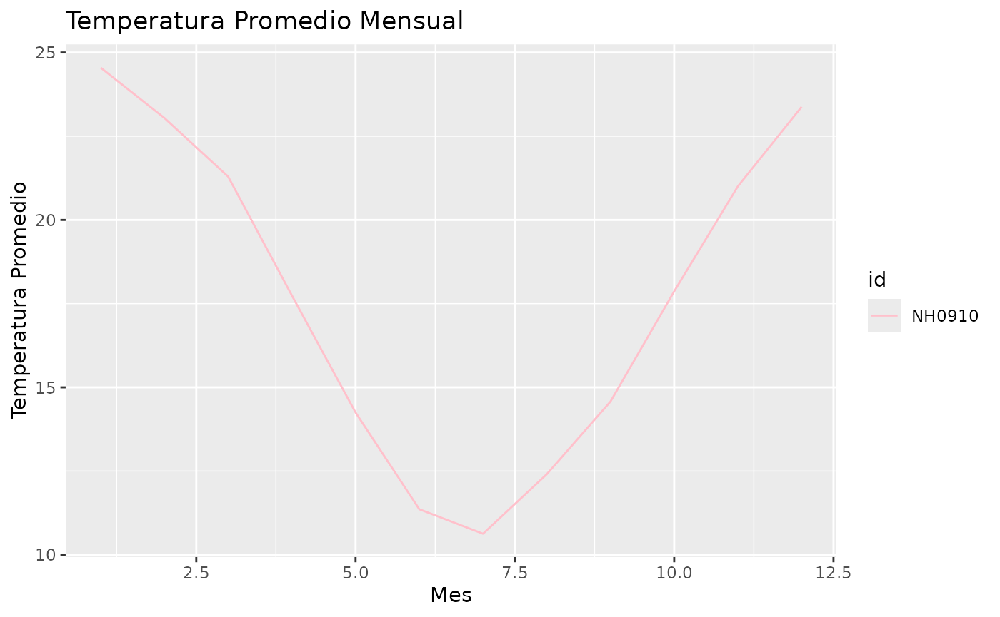

Función gráfico_temperatura_mensual
La función grafico_temperatura_mensual permite generar un gráfico de líneas que muestra la temperatura promedio mensual agrupada por estación. Es útil para visualizar tendencias de temperatura a lo largo del año.
Ejemplo de uso:
NH0910 <- descargar_datos("NH0910", "data")
#> Rows: 15553 Columns: 35
#> ── Column specification ────────────────────────────────────────────────────────
#> Delimiter: ","
#> chr (1): id
#> dbl (5): temperatura_abrigo_150cm, temperatura_abrigo_150cm_maxima, temper...
#> lgl (28): temperatura_intemperie_5cm_minima, temperatura_intemperie_50cm_mi...
#> date (1): fecha
#>
#> ℹ Use `spec()` to retrieve the full column specification for this data.
#> ℹ Specify the column types or set `show_col_types = FALSE` to quiet this message.
grafico_temperatura_mensual(NH0910, colores = "blue", titulo = "Temperatura Promedio Mensual")
Función farenheit_a_centigrados
Esta función convierte temperaturas de grados Fahrenheit a grados Celsius. Es útil cuando se trabaja con datos en diferentes sistemas de unidades.
Ejemplo de uso:
farenheit_a_centigrados(90)
#> [1] 32.22222Función tabla_resumen_temperatura
La función tabla_resumen_temperatura resume la temperatura de abrigo (150 cm) por estación, mostrando la temperatura mínima, máxima y promedio.
Ejemplo de uso:
tabla_resumen_temperatura(NH0910)
#> # A tibble: 1 × 4
#> id min_temp max_temp mean_temp
#> <chr> <dbl> <dbl> <dbl>
#> 1 NH0910 0 35.2 17.7Función descargar_datos
La función descargar_datos permite descargar los datos meteorológicos de una estación específica. Los IDs de las estaciones disponibles son NH0098, NH0046, NH437, NH472 y NH0910.
Ejemplo de uso:
descargar_datos("NH0098", "data")
#> Warning: One or more parsing issues, call `problems()` on your data frame for details,
#> e.g.:
#> dat <- vroom(...)
#> problems(dat)
#> Rows: 23733 Columns: 35
#> ── Column specification ────────────────────────────────────────────────────────
#> Delimiter: ","
#> chr (2): id, direccion_viento_1000cm
#> dbl (21): temperatura_abrigo_150cm, temperatura_abrigo_150cm_maxima, temper...
#> lgl (11): temperatura_intemperie_50cm_minima, temperatura_inte_5cm, tempera...
#> date (1): fecha
#>
#> ℹ Use `spec()` to retrieve the full column specification for this data.
#> ℹ Specify the column types or set `show_col_types = FALSE` to quiet this message.
#> # A tibble: 23,733 × 35
#> id fecha temperatura_abrigo_150cm temperatura_abrigo_150cm_maxima
#> <chr> <date> <dbl> <dbl>
#> 1 NH0098 1956-04-01 13.6 21.6
#> 2 NH0098 1956-04-02 16.8 23.6
#> 3 NH0098 1956-04-03 19 25.9
#> 4 NH0098 1956-04-04 17.6 23.6
#> 5 NH0098 1956-04-05 20 27.2
#> 6 NH0098 1956-04-06 19.2 24.7
#> 7 NH0098 1956-04-07 15 19.1
#> 8 NH0098 1956-04-08 18.8 26.8
#> 9 NH0098 1956-04-09 18.2 26.6
#> 10 NH0098 1956-04-10 11.4 15.4
#> # ℹ 23,723 more rows
#> # ℹ 31 more variables: temperatura_abrigo_150cm_minima <dbl>,
#> # temperatura_intemperie_5cm_minima <dbl>,
#> # temperatura_intemperie_50cm_minima <lgl>,
#> # temperatura_suelo_5cm_media <dbl>, temperatura_suelo_10cm_media <dbl>,
#> # temperatura_inte_5cm <lgl>, temperatura_intemperie_150cm_minima <lgl>,
#> # humedad_suelo <lgl>, precipitacion_pluviometrica <dbl>, granizo <dbl>, …